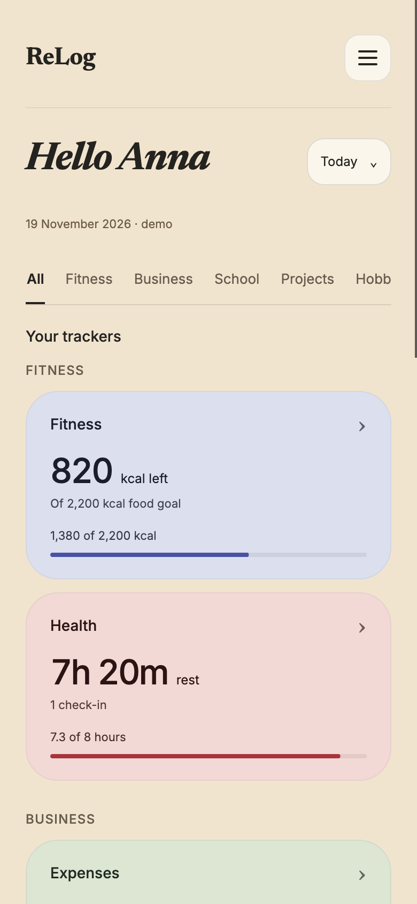

Redni rekreativci
z iPhonom
Začetni pilot v BJJ skupnostih v Sloveniji.
Prilagodljiv dnevnik poveže aktivnost, napredek, čas in stroške.
Preizkus mora pokazati korist vsaj dveh povezanih trackerjev.
En vnos.
Širša slika tvojega življenja.
Vadba, prehrana, zdravje, stroški in rutine.
Prilagojeni tebi. Povezani med seboj.
Trening v eni aplikaciji.
Stroški v drugi.
Urnik in zapiski nekje tretje.
V javnih razpravah opisujejo dvojni vnos, neusklajene popravke in grafe brez uporabnega odgovora.
Kvalitativni signal potrebe.
Velikost trga in pripravljenost plačati še nista potrjeni.

Tracker izbereš in prilagodiš.
Podatek vneseš enkrat.
Oblikovalski cilj: 1-3 dotiki za pogoste vnose; dostop do vseh podprtih vnosov v manj kot 8 dotikih.
Izvorni widgeti so načrtovani; hitrost še ni izmerjena.
Polja, enote, widgeti in povezave.
Preverjeni gradniki, shranjena verzija.
Besedilo ali prepis govora pretvori
v dejstva po znani strukturi.
En dogodek, dosledni izračuni.
Popravek ali izbris popravi posledice.
»Danes 60 minut,
pet rund, vadili triangle.«
| Napredek | 60 minut, runde, tehnike in zapiski |
|---|---|
| Vadba | Ocenjena poraba; brez dvojnega štetja sparinga |
| Stroški | Dejanska pot kot ocena; članarina ločeno mesečno |
| Rutine | Pozneje predlogi izvedljivega urnika s potrditvijo |
Hrana: AI poišče živila, baza poda hranila, koda izračuna. Lokalni podatki in izračuni; majhen backend za AI. Lasten profil, zamenljiv ponudnik modelov.
| Primerjalnik | Javno opisana zmožnost |
|---|---|
| KeeperPal / LifesOS | Več področij in AI vnos ali vpogledi |
| Reflect / Track & Graph | Poljubne meritve in povezane formule |
| WHOOP / Oura | Biometrični podatki in več AI/ML plasti |
| FlowJitsu / BJJBuddy | Globina specializiranega BJJ dnevnika |
| Sheets / Notion / Shortcuts | Prilagodljiva rešitev, ki jo uporabnik sestavi sam |
Celotnega našega toka pri konkurenci nismo potrdili. To ni dokaz, da ga nima nihče.
AI pomaga sestaviti tracker.
Uporabnik dobi korist brez programiranja
in brez vsakodnevnega pogovora z AI.
Gostovanje zaprto. Ustanovitelj ni uspel monetizirati produkta.
Moves / 2018Zaprtje aplikacije in API opozarja na odvisnost od integracij.
Začetna cenovna hipoteza.
Primerjalni test tudi pri 7,99 €.
Preizkus mora pokazati povezano korist.
Obseg AI in govora določimo po meritvah.
Scenarij, ne napoved ali dobiček. Odšteti je treba davke, trgovino, AI/govor, infrastrukturo, podporo in marketing.
| Predpostavka | Srednji test | Zelo dober |
|---|---|---|
| Cena klika | 1,00 € | 0,60 € |
| Klik → namestitev | 40 % | 50 % |
| Namestitev → plačilo | 3 % | 8 % |
| Strošek plačnika | 83,33 € | 15,00 € |
prispevka v šestih plačanih mesecih,
če ostane 3 €/mesec. Osip zniža mejo.
Zato najprej skupnosti in priporočila.
Več oglasov šele po dokazu redne uporabe.
Začetek: iPhone uporabniki z rednim športom, urnikom in stroški.
BJJ klubi v Sloveniji za pilot; pozneje en angleški trg za oglase.
Danes: dva spletna prototipa.
Naslednji dokaz: ljudje se vrnejo, uporabijo povezave in plačajo.
Začetni pilot v BJJ skupnostih v Sloveniji.
Prilagodljiv dnevnik poveže aktivnost, napredek, čas in stroške.
Preizkus mora pokazati korist vsaj dveh povezanih trackerjev.
Cenovni hipotezi za primerjalni test.
Paket, brezplačen preizkus in obseg AI/govora določimo po meritvah.
Klubi, priporočila in manjši ustvarjalci. Oglasi po dokazu uporabe in plačil.
Stroški: razvoj, podpora, AI/govor, shramba, trgovina in pridobivanje.
Ročni vnos in widget ne potrebujeta modelskega klica.
3 € prispevka/mesec × 6 plačanih mesecev.
Osip zniža dovoljeni strošek pridobitve.
Delovni model: devet hipotez, ki jih preverimo z uporabo in plačili.
Alternative: več aplikacij, preglednice, Notion.
En vnos za vse.
Povezanost med aktivnostmi.
Še ni dokazana.
Kandidati: preverjene predloge in skupnost.
Zgodnji uporabniki že beležijo v več orodjih.
Razvoj, podpora, AI/govor, shramba, trgovina in pridobivanje.
Pilotni okvir do 1.500 €; razvoj in lastni čas posebej.
Predlagana mesečna naročnina. Cenovni test 4,99 € / 7,99 €.
Obseg paketa in porabe potrdimo po validaciji.